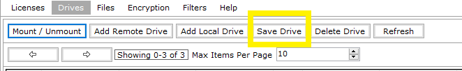
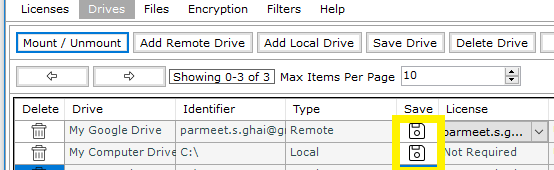
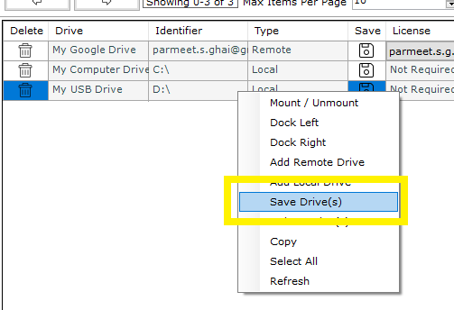
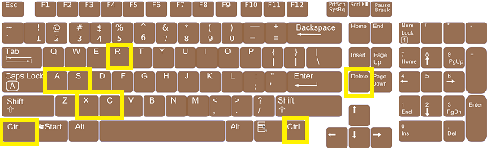

All tabs or sections throughout the application (Licenses, Drives, Encryption etc) give out these four ways to save a data item associated with a list of data items
|
1 |
Save option present on the Control bar. |
 |
|
2 |
Save option present in the list of the data item in the same row as the data item with a "Floppy Disk" icon. |
 |
|
3 |
Save option present in right click menu of the data item list itself. |
 |
|
4 |
Save option through Keyboard Shortcut Ctrl + S. |
 |